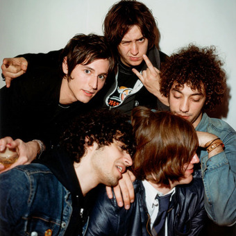
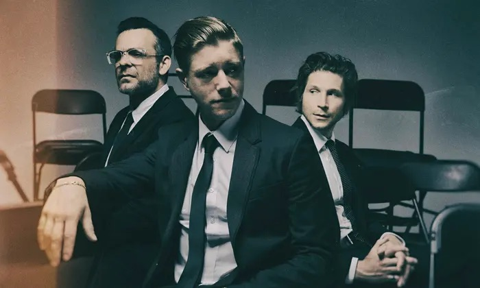
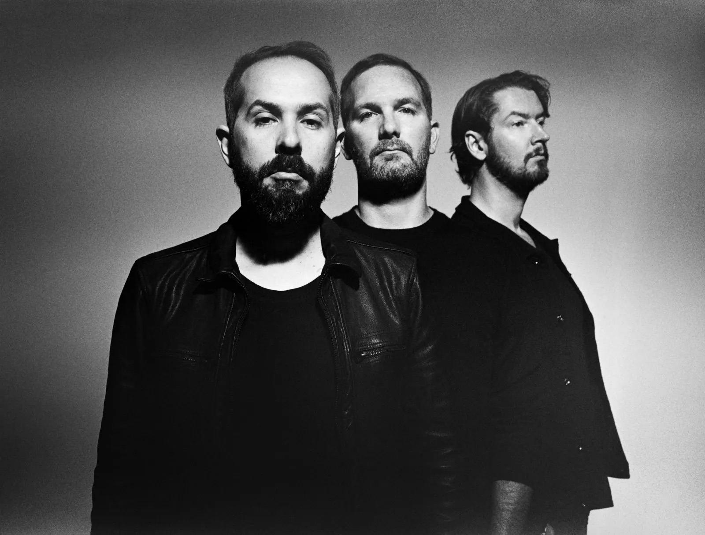
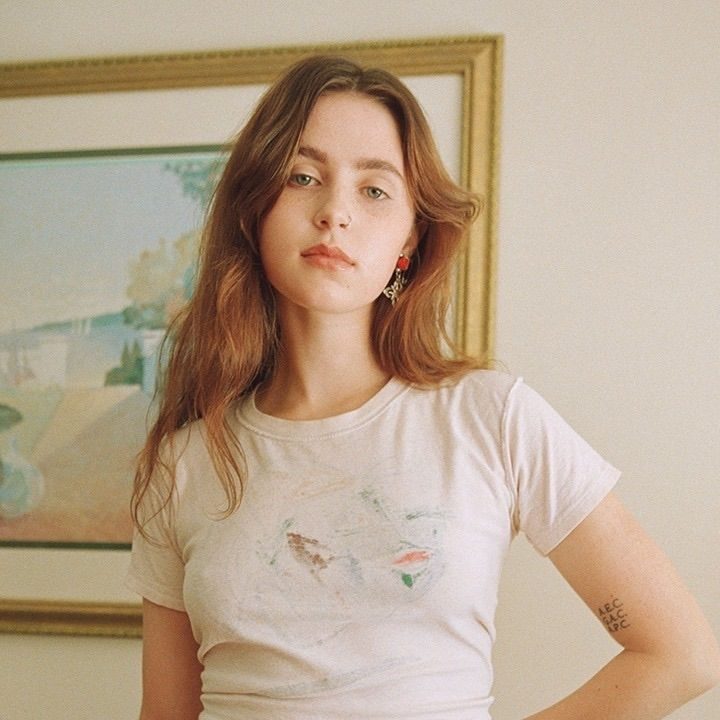
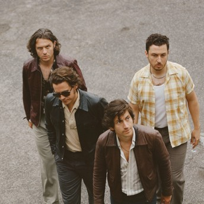
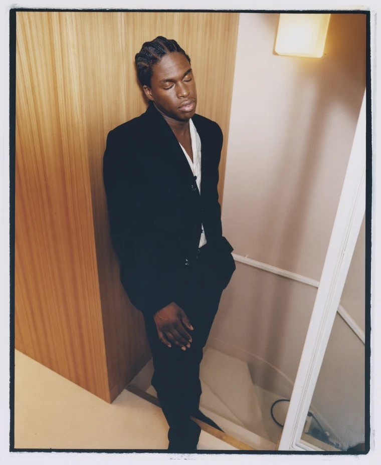

Coldplay

Coldplay, formed in London in 1996, has become a global phenomenon, transcending genres with their emotive soundscapes and poignant lyrics. Comprising Chris Martin, Guy Berryman, Jonny Buckland, and Will Champion, the band has crafted a distinctive blend of rock and pop, earning them numerous accolades and millions of devoted fans. With hits like "Yellow," "Fix You," and "Viva la Vida," Coldplay's music resonates with universal themes of love, resilience, and hope. Renowned for their electrifying live performances and commitment to social causes, Coldplay remains an influential force, continuously pushing artistic boundaries while maintaining a heartfelt connection with their audience.
The Strokes

The Strokes, a New York City-based rock band formed in 1998, have left an indelible mark on the music scene with their raw, garage-rock sound and charismatic swagger. Comprising Julian Casablancas (vocals), Nick Valensi (guitar), Albert Hammond Jr. (guitar), Nikolai Fraiture (bass), and Fabrizio Moretti (drums), the quintet burst onto the scene with their debut album, "Is This It," in 2001. With a distinctive blend of post-punk revival and indie rock, The Strokes are celebrated for their influential contributions to modern rock, maintaining a cool, effortless style that has solidified their status as one of the defining bands of the early 21st century.
Interpol

Interpol, the enigmatic post-punk revivalists, emerged from New York City's music scene in 1997. Comprising Paul Banks, Daniel Kessler, and Sam Fogarino, their brooding sound and lyrical depth have defined a generation. Influenced by Joy Division, they seamlessly blend dark atmospheres with propulsive rhythms. Interpol's 2002 debut album, "Turn on the Bright Lights," catapulted them to global acclaim, establishing a signature sound that marries melancholy with urgency. Over the years, their sonic evolution has solidified their status as indie rock icons. With a meticulous approach to their craft, Interpol continues to craft haunting, atmospheric soundscapes that captivate audiences worldwide.
Beach House

Beach House, the dream-pop duo comprised of Victoria Legrand and Alex Scally, weaves a sonic tapestry that transcends the conventional. Formed in Baltimore in 2004, their ethereal sound is characterized by Legrand's haunting vocals and Scally's intricate guitar work. With a discography that includes albums like "Teen Dream" and "Bloom," Beach House mesmerizes audiences with lush, atmospheric compositions that evoke a sense of nostalgia and introspection. Their music, a delicate fusion of dreamy melodies and poetic lyricism, paints a vivid emotional landscape. Beach House stands as an enigmatic force, captivating listeners with a timeless, otherworldly allure.
Kendrick Lamar
Kendrick Lamar is an award-winning American rapper and songwriter, hailing from Compton, California. Born on June 17, 1987, Lamar is acclaimed for his profound lyrics and innovative music style. Since his mainstream debut in 2010, he's released multiple chart-topping albums, including "good kid, m.A.A.d city," "To Pimp a Butterfly," and "DAMN." His lyrical exploration of societal and personal issues has won him numerous accolades, including 13 Grammy Awards. Lamar continually pushes boundaries with his words and beats, solidifying his place as one of the most influential voices in contemporary music.
Cigarettes After Sex

Cigarettes After Sex is a dreamy ambient pop collective led by Greg Gonzalez. Founded in El Paso, Texas, in 2008, they gained prominence for their ethereal soundscapes and hauntingly romantic lyrics. Their music, often characterized by hushed vocals and melancholic undertones, draws on influences from shoegaze and slowcore. Their self-titled debut album, released in 2017, brought them international acclaim. Notable for their atmospheric live performances, Cigarettes After Sex continues to captivate listeners worldwide with their cinematic, dusk-till-dawn narratives, solidifying their place in the annals of modern indie music.
Clairo

Clairo (real name Claire Cottrill) is a critically acclaimed American singer-songwriter known for her distinct indie pop sound. Born in 1998, she first gained popularity in 2017 with her homemade music video, "Pretty Girl." Her breakthrough album, "Immunity" (2019), received widespread acclaim for its raw lyrics and unique soundscape. Veering between dreamy bedroom pop and synth-laden hooks, Clairo's music is intimate, electric, and deeply relatable. Her work offers personal insights on life, love, and identity. An important voice in today's music landscape, Clairo continues to push boundaries with her evocative artistry.
Arctic Monkeys

Arctic Monkeys, a Sheffield-born indie rock band, epitomizes a unique blend of rock, punk, and pop sounds. Formed in 2002, the band consists of Alex Turner, Jamie Cook, Nick O'Malley, and Matt Helders. With their initial spread via the internet, they pioneered online music promotion. Their debut album, "Whatever People Say I Am, That's What I'm Not," became the fastest-selling debut album in UK chart history. Known for their incisive lyrics, Arctic Monkeys continue to innovate, with their 2018 album, "Tranquility Base Hotel & Casino," showcasing a turn towards a more lounge-pop, piano-featured aesthetic.
Daniel Caesar

Daniel Caesar is a renowned Canadian R&B and soul singer-songwriter. Known for his emotionally-rich music and distinct falsetto, he first gained recognition in 2014 with his debut EP, "Praise Break." Caesar's critically acclaimed album, "Freudian," catapulted him into the limelight in 2017, earning him several Juno and Grammy nominations. His soulful lyrics often explore themes of love, faith, and personal growth. With a unique sound that seamlessly blends contemporary R&B with gospel influences, Caesar has carved out a niche for himself in the music industry, enchanting listeners with his profound and introspective musical narratives.
Laufey
Laufey Lin, known professionally as Laufey, is an Icelandic-Chinese singer, songwriter, and cellist with a distinctive jazzy pop sound. Born and raised in Reykjavik, Iceland, Laufey's unique blend of cultures is reflected in her music that seamlessly merges elements of classical, jazz, pop, and soul. Her extraordinary talent has seen her performing at renowned venues like Carnegie Hall. Her debut EP "Typical of Me'' skyrocketed her to international recognition, with a nomination for the Icelandic Music Awards. With her rich voice and captivating storytelling, Laufey is a breath of fresh air in the music landscape.